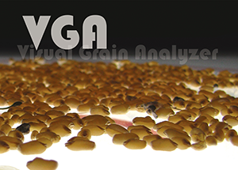
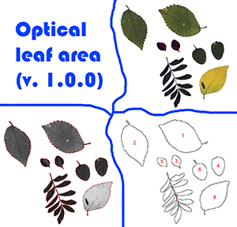
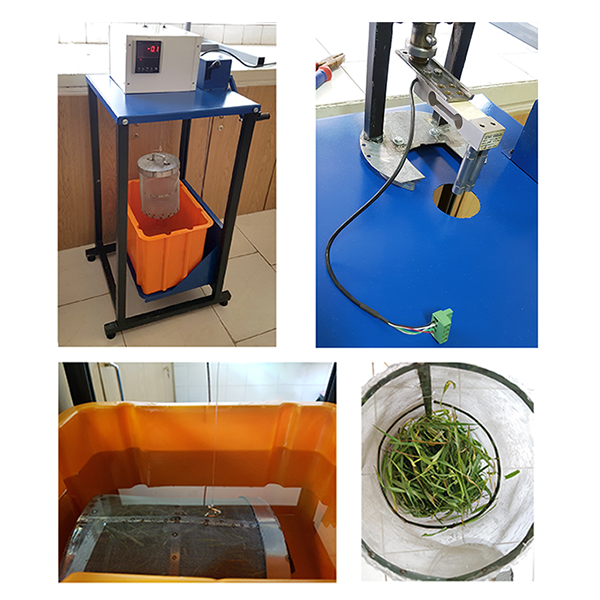
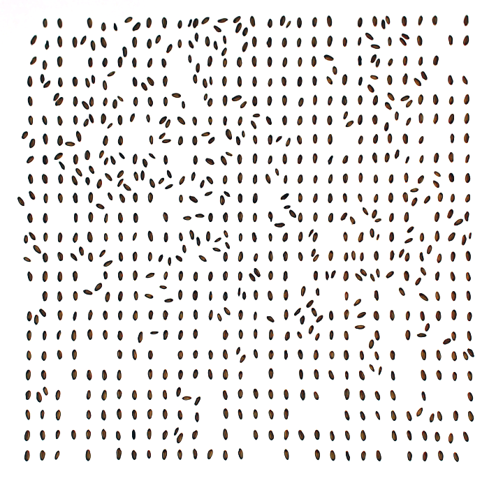
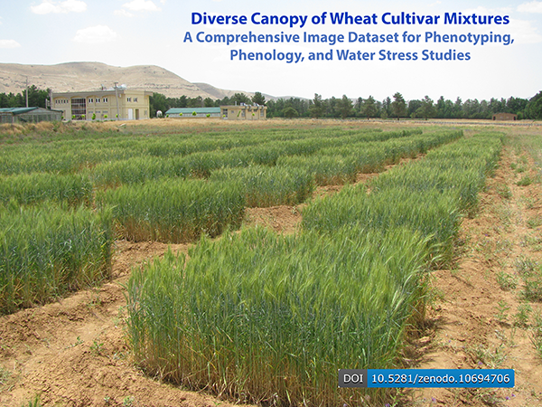
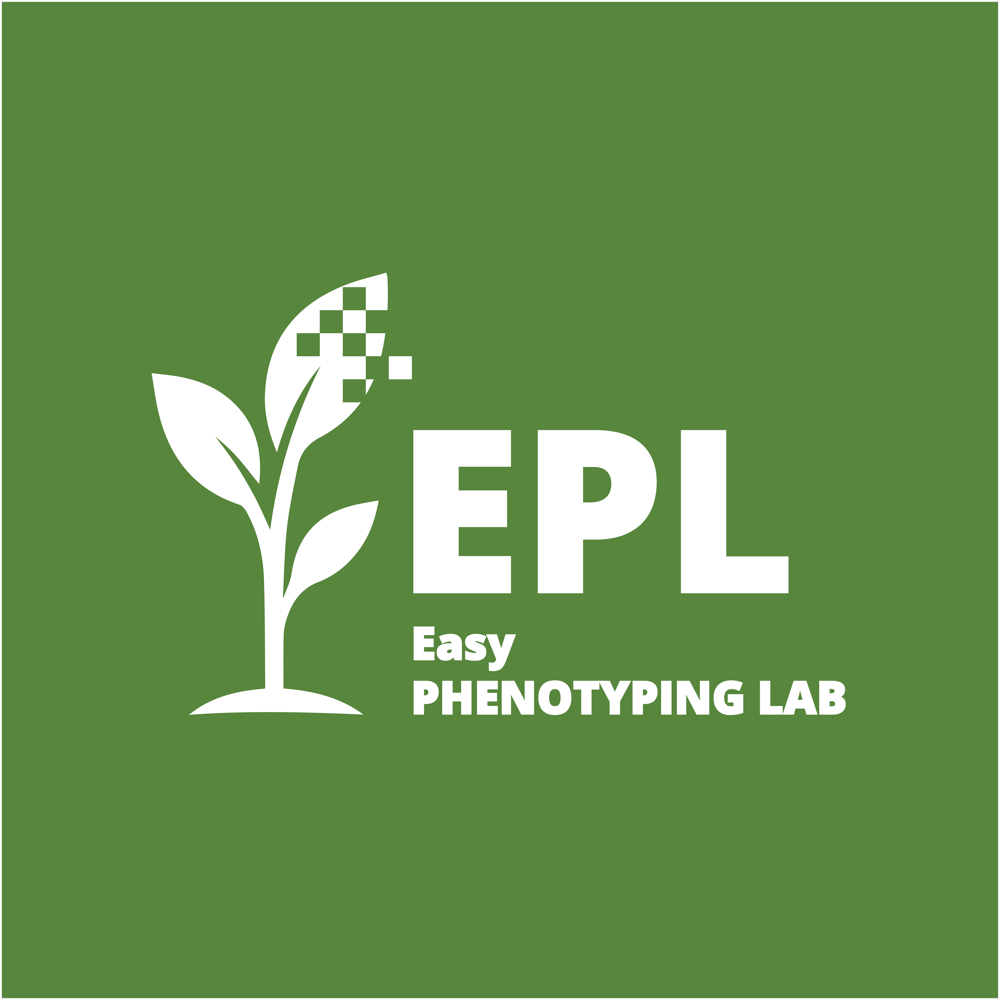

What Is EPL?
The Easy Phenotyping Lab (EPL) is a non-profit scientific initiative dedicated to simplifying and democratizing crop phenotyping for researchers worldwide. EPL develops simple, novel, and reliable solutions for the widespread phenotyping challenges faced by researchers in crop and plant sciences, while sharing its own software tools, code snippets, computational models, and novel measurement approaches designed to make plant and crop phenotyping accessible to any lab, anywhere.
Initiated by:
Abbas Haghshenas (Independent Researcher in Crop Production, Shiraz, Iran)
GitHub:
github.com/haqueshenas
Contact:
haqueshenas@gmail.com
With thanks to Prof. Yahya Emam (Shiraz University, Iran) for his
invaluable support and collaboration.
Open Crop Phenotyping (OCP)
We believe that the tools needed to understand and improve crops should be accessible to as many researchers as possible, wherever they work and whatever resources they have. We therefore invite researchers and developers of crop and plant phenotyping tools to share their software, methods, and practical innovations openly, freely, and in forms that others can readily access, use, learn from, reproduce, and build upon—preferably under permissive licenses such as MIT, BSD, or similar licenses. This effort is guided by six principles: Reliability, Simplicity, Availability, Affordability, Reproducibility, and Community. No single laboratory owns this effort, and no single developer speaks for it: we are connected by a shared commitment to lowering the barriers to phenotyping and helping one another advance science. Alongside High-Throughput Phenotyping (HTP), this is also a step toward what may be called High-Accessibility Crop Phenotyping—making capable and trustworthy phenotyping tools available to more researchers, in more places, and with fewer barriers.
Open Crop Phenotyping (OCP) was initiated by the Easy-Phenotyping Lab (EPL) and is offered as an open, shared commitment that no single laboratory owns. The idea is intended to be adopted, developed, and carried forward by the wider crop and plant phenotyping community.
The Principles We Share
- Reliability: Scientifically sound methods, with code and procedures tested as carefully as reasonably possible.
- Simplicity: Clear documentation, practical examples, and no unnecessary technical complexity.
- Availability: Tools should be openly accessible and usable by researchers without unnecessary institutional or geographic barriers.
- Affordability: The approach should avoid unnecessary dependence on expensive proprietary hardware or software.
- Reproducibility: Documentation, sample data, parameters, or other information should be provided whenever practical so that results can be examined and reproduced.
- Community: Researchers everywhere are welcome to use, test, discuss, improve, adapt, and share phenotyping tools.
Why OCP?
Scientific progress does not depend only on developing new phenotyping technologies. It also depends on whether useful technologies can reach the researchers who need them. Across crop and plant sciences, valuable tools are often limited by technical complexity, cost, proprietary software, lack of documentation, or restricted access. OCP seeks to reduce these barriers by encouraging a culture in which useful phenotyping tools are shared rather than isolated—so that researchers can access existing solutions, learn from them, reproduce them, improve them, and build new work upon them.
Important: OCP is a voluntary scientific commitment, not a software license, certification, or endorsement. Each developer or research group remains fully responsible for the scientific validity, technical performance, maintenance, documentation, and licensing of its own work. Sharing a tool in the spirit of OCP does not imply that EPL has certified or guaranteed that tool.
Copy a standard OCP statement for your README, website, paper, or tool page.
Read the canonical OCP document on GitHub →Tools Developed by EPL
The tools below are developed and shared by the Easy-Phenotyping Lab. They represent practical applications of the open, accessible, and reproducible approach described above. Their scientific and technical responsibility remains with their respective developers and contributors.
Canopy CCGR for Python
A practical image-analysis tool for quantitative canopy coverage and canopy greenness that pioneers the quantitative definition of image-based phenology alongside traditional methods. Canopy CCGR provides reproducible image-based measurements of canopy cover, greenness, and the combined CCGR index, with multiple segmentation methods and a user-friendly workflow for crop and plant science applications.
Version 1.0.0 · Windows executable available · No Python installation required for Windows users.
View on GitHub →Canopy-GSM
Canopy GSM for Python is an open-source scientific image-analysis tool for quantitative RGB crop-canopy analysis. It represents vegetation along the Green gradient and examines relative Red and Blue trends to investigate canopy shading patterns, characterize canopy-related variation, classify vegetation by degree of sunlight exposure, and generate quantitative image-derived outputs for crop phenotyping and image mining.
View on GitHub →
Visual-Grain-Analyzer
Visual Grain Analyzer (VGA) is a user-friendly ImageJ macro, which has utilized ImageJ/or Fiji facilities to provide a simple tool for grain analysis, seed technology, and phenomics studies.
View on GitHub →
Optical-Leaf-Area
Optical Leaf Area (OLA) is a user-friendly ImageJ macro, which has utilized ImageJ/or Fiji facilities to provide a simple tool for leaf area measurement.
View on GitHub →
Volumetric-Leaf-Area
A novel destructive phenotyping method that replaces labor-intensive leaf unfolding and scanning with a simple leaf-pile volumetry approach. By measuring the volume of an entire leaf pile via a basic suspension technique, VLA delivers precise and accurate total leaf-area estimates—streamlining workflows and removing the tedium of conventional methods.
Read the paper →Easy-Quadrat
Easy Quadrat is nothing but the same quadrat traditionally used in agronomy and crop science. Now, it has been brought into the field of modern phenotyping, for cropping and sampling; not from the plants themselves but rather from the images of plants.
View on GitHub →Acoustic-Volumeter
An open source, DIY, microphone free acoustic volumetry platform for rapid, precise volumetric measurements—designed for global phenotyping applications.
View on GitHub →Scientific Datasets
The Easy-Phenotyping Lab (EPL) is committed to open science. We share datasets that underpin our research to support reproducibility and foster further innovation.

Images of Wheat Grains
Platform: Figshare
This image archive includes 180 images taken from ~72,000 harvested grains of wheat cultivars grown under varied irrigation conditions. Used in:
Haghshenas, A., Emam, Y., & Jafarizadeh, S. (2022). Wheat grain width: a clue for re-exploring visual indicators of grain weight. Plant Methods, 18(1), 58. https://doi.org/10.1186/s13007-022-00891-1
View Dataset on Figshare →
Diverse Canopy of Wheat Cultivar Mixtures
Platform: Zenodo
Includes 1676 nadir images captured from 90 wheat plots across two growing seasons with different irrigation treatments. Useful for phenotyping, phenology, and water stress research.
View Dataset on Zenodo →Key Eco-Physiological Findings by EPL
Grain width is the core phenotypic contributor to wheat grain weight.
Found using Visual-Grain-Analyzer (VGA).
Read more →An independent, image-based quantitative phenology model— pioneering in its parallel application to conventional qualitative approaches—was introduced.
Developed and validated with Canopy-CCGR.
Read more →A new definition of canopy: each green canopy can be represented quantitatively using two image-derived exponential equations— based on green-gradient-normalized red and blue trends—that together form the GSM curve (Green-Gradient-Based Canopy Segmentation). Shading patterns are then categorized by the local slopes of those trends, and also their curvature can predict and characterize environmental and genetic variation.
Developed using Canopy-GSM.
Read more →An accidental observation revealed that soil red-color intensity in RGB images taken at wheat booting can predict final relative grain yield.
Discovered with Canopy-CCGR.
Read more →Leaf-pile volumetry offers a rapid, simple, and highly accurate alternative to laborious destructive leaf-area methods—regardless of sample size—and suggests that leaf volume may better characterize canopy light interactions than area.
Demonstrated with the Volumetric Leaf Area (VLA) method.
Read more →Citation
If you use Easy-Phenotyping Lab (EPL) tools, please cite us:
Haghshenas, A. (2025). Easy-Phenotyping Lab (EPL) [Computer software]. Zenodo. https://doi.org/10.5281/zenodo.15296178
